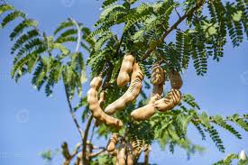
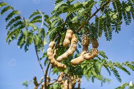
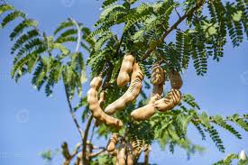

Galeria
 

A agricultura familiar é uma forma de produção agrícola que utiliza mão-de-obra familiar e mantém a pequena escala de produção. É um modelo que contribui para a sustentabilidade econômica e ambiental das comunidades rurais.
Preservação ambiental é um conjunto de ações de proteção da natureza de forma que ela seja intocável, ou seja, que não se pode mexer, e sem interferência humana. A preservação ambiental acontece quando há ameaças, como desmatamento e o aquecimento global, à biodiversidade e a espécies, ecossistemas ou biomas.
O fortalecimento da economia local é garantido pela agricultura familiar, que também tem um grande potencial de geração de empregos e renda, pois envolve diversas etapas da cadeia produtiva, desde o cultivo até a comercialização dos produtos.
A valorização da cultura local é um conceito que se refere ao reconhecimento, preservação e promoção das tradições, costumes, expressões artísticas e patrimônios culturais de uma determinada região ou comunidade.
De acordo com a Confederação Nacional dos Trabalhadores e Trabalhadoras na Agricultura Familiar do Brasil (Contraf), em entrevista ao Correio Braziliense, existem muitos produtores rurais invisibilizados na agricultura familiar. “São aqueles que vendem na própria comunidade, entre vizinhos, em feiras. Embora não percebidos pelo Estado, têm impacto nas condições de vida das populações locais”, explica Marcos Rochinski, coordenador da Contraf.
